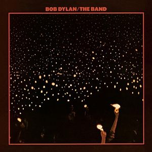

Toggle navigation
Bob Dylan Lyrics
Downloads
All Songs
1960s
Bob Dylan
The Freewheelin' Bob Dylan
The Times They Are A-Changin'
Another Side of Bob Dylan
Bringing It All Back Home
Highway 61 Revisited
Blonde on Blonde
Bob Dylan's Greatest Hits
John Wesley Harding
Nashville Skyline
1970s
Self Portrait
New Morning
Bob Dylan's Greatest Hits, Volume II
Pat Garrett & Billy the Kid
Dylan
Planet Waves
Before the Flood
Blood on the Tracks
The Basement Tapes
Desire
Hard Rain
Street Legal
Bob Dylan at Budokan
1980s
1990s
2000s
2010s
Before the Flood

Released: June 20, 1974
Length: 92:38
Producer: Bob Dylan and the Band
Label: Asylum
Side 1
Most Likely You Go Your Way (And I'll Go Mine)
Lay Lady Lay
Rainy Day Women #12 & 35
Knockin' on Heaven's Door
It Ain't Me, Babe
Ballad of a Thin Man
Side 2
Up on Cripple Creek (performed by The Band)
I Shall Be Released (sung by Richard Manuel)
Endless Highway (performed by The Band)
The Night They Drove Old Dixie Down (performed by The Band)
Stage Fright (performed by The Band)
Side 3
Don't Think Twice, It's Alright
Just Like a Woman
It's Alright, Ma (I'm Only Bleeding)
The Shape I'm In (performed by The Band)
When You Awake (performed by The Band)
The Weight (performed by The Band)
Side 4
All Along the Watchtower
Highway 61 Revisited
Like a Rolling Stone
Blowin' in the Wind